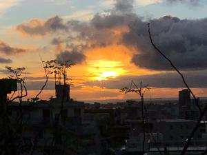

うるがいの話 ある日
最新: ガジャミ
うるがいとは 前提知識です
カニの画像をクリックすると『うるがいの話』サイトを表示します
うるがい(ｳﾙｶﾞｲ urugai)とは、『もずくがに』の名前でとても大きくなります。
たながー（ﾀﾅｶﾞｰtanagaa）とは手長えびのことで、何種類かあり大きいのは車 エビぐらいになります。
ぶながー(bunagaa)とは、赤い髪の毛、赤い身体、そして身長は１ｍ２０ｃｍ ぐらい、川の蟹を食べているの目撃された。場所は沖縄県国頭郡大宜味村のと ある村僕の隣近所に住んでいる爺さんから、聞いた話です。
2021年07月29日 (木）
ガジャミ
16:27

私の郷里ではガジャミとは蚊のことである。ガジャンが一般的だと思う。屋敷
の周りには蚊が多く、水を撒くたび蚊にかまれイライラしていた。なにか対策
はないかとネットで調べる。蚊が嫌がる草があるらしい、おおお、聞いたこと
がある。でも、よく調べてみるとあまり効果がないようだ、フト、ん、蚊取り
線香がやはり効果があるのでは！と一ト月前から、朝、雨戸をあける時に蚊取
り線香を一渦巻、玄関に置く。昼過ぎには、火は消えてしまうが効果はてきめ
んである。いつも聴いているラジオ番組の初めに、「新たな感染３９２人過去
最多を更新している、緊急事態宣言なのに」と言っていた。ヨメのお母さんを
気分展開のためお昼、車で首里城公園近辺をドライブに行くと観光客と思しき
レンターが走っていた。ヨメは観光客は来てはダメと怒っている。「ムる解ら
ん」とラジオから方言で歌っている、ヨメのお母さんの口癖も「なにがどなっ
ているのか、分からない」である。帰りアパートに送った時、ヨメになんであ
んたと居るのかね？と言ったとのこと。そろりそろりとその日は近づく。